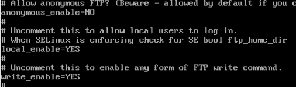
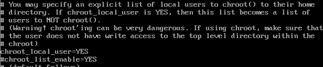
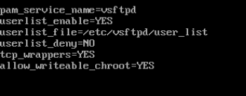
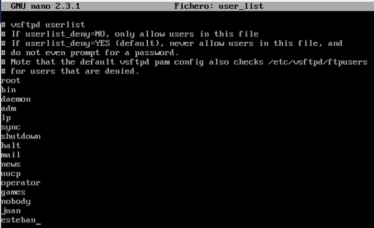
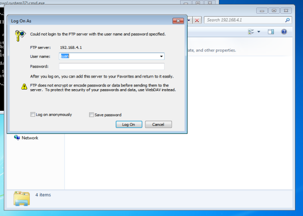

Tutorial de instalacion servidor FTP
Abril 4, 2023 posted por Juan E. Castro
Las siglas de FTP significan File Transfer Protocol, que se traduce como Protocolo de Transferencia de Archivos. Como su nombre indica, se trata de un protocolo que permite transferir archivos directamente de un dispositivo a otro.
Requisitos:
- Direccion Ip estatica
- Maquina virtual Centos 7
- Maquina virtual con Window XP, 7, 8, 8.1
Paso 1: Instalacion de servidor FTP.
Se realiza la instalacion del servidor FTP a traves del siguiente comando de Linux.
Paso 2: Configuracion del servidor FTP.
La configuracion se realiza en el archivo de configuracion ubicado en la siguiente ruta, /etc/vsftpd/vsftpd.conf este archivo lo abriremos con cualquier editor de texto y realizaremos las siquientes configuraciones. En esta parte indicaremos los usuarios que tendran acceso al servidor FTP por medio de una whitelist.
  Paso 3: Agregar usuarios a la whitelist.
Para permitir usuarios conectarse al servidor FTP sera necesario agregarlos al activo user_list ubicado en la direccion /etc/vsftpd/.
Pruebas de funcionamiento del servidor FTP.
Verificando que nuestro servidor FTP este funcionando correctamente accedemos desde nuestra maquina cliente. Para el caso podemos acceder desde el explorador de archivos como se muestra en las siguientes imagenes. Si se realiza la conexion los pedira las credenciales corespondientes al usuario creado durante la configuracion total del servidor. Los archivos o carpetas que se creen en esa carpeta se podran visualizar en ambas maquinas, tanto del lado del servidor como del lado del cliente.
